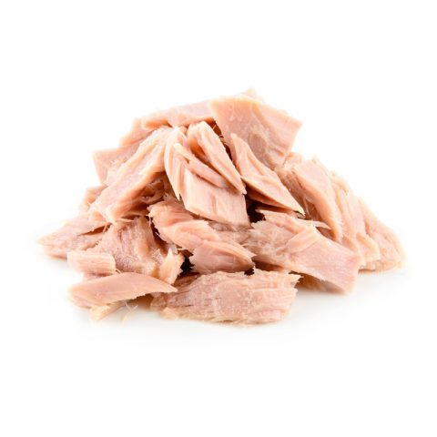

Catfood

Very delicious food. Easy and cheap to made. Kids like it.
You only need a frying pan, pot and some time.
Ingredients
- 3 Tuna cans
- Handfull of spaghetti
- Half pot of water
- 1dl Cheese cream
- A pinch of pepper
- A Little bit salt
Steps
- Put the pot on the stove. Fill the pot with half of water and put the spaghetti in.
- Heat the tuna in a frying pan.
- When the tuna is almost cooked, add salt and pepper.
- Add the cream to the tuna and stir until the cream thickens.
- When spaghetti is coocked remove water and add the tuna to pot.
- Mix well and serve.
- Eat with happy smile on your face.
Back